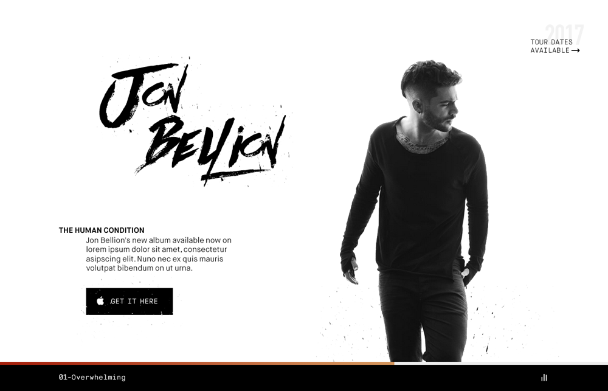
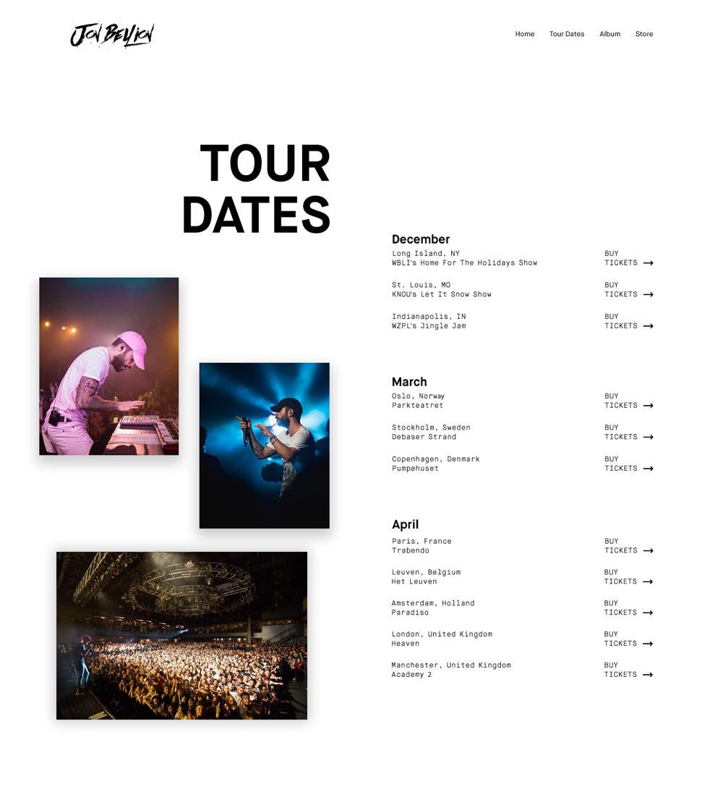

Recently I started listening to a couple of Jon Bellion songs and got inspired to design a new website for him. I like to use these side projects as an opportunity to try something new. In this one I tried a style that I don't really get to do on client projects at work. .....